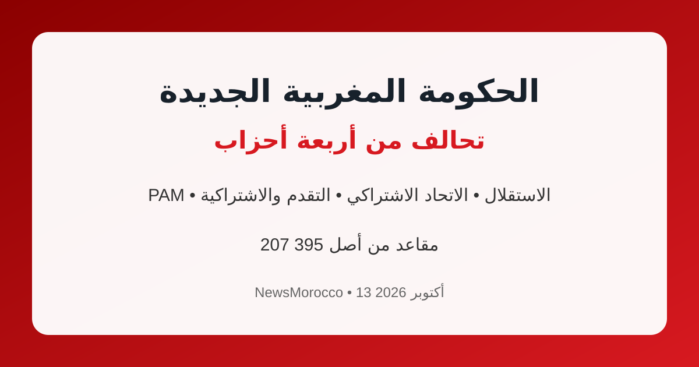

تشكيل الحكومة المغربية الجديدة.. أغلبية من أربعة أحزاب

أعلنت الأحزاب الأربعة المكونة للأغلبية الحكومية الجديدة في المغرب: حزب الأصالة والمعاصرة (PAM)، وحزب الاستقلال (PI)، والاتحاد الاشتراكي للقوات الشعبية (USFP)، وحزب التقدم والاشتراكية (PPS)، في خطوة تفتح الطريق أمام تشكيل الحكومة الجديدة.
وبحسب المعطيات المعلنة، تتوفر هذه الأغلبية على 207 مقاعد من أصل 395 في مجلس النواب، وهو عدد يتجاوز الأغلبية المطلوبة لتشكيل الحكومة.
فاطمة الزهراء المنصوري تقود مشاورات التشكيل
كانت فاطمة الزهراء المنصوري، القيادية في حزب الأصالة والمعاصرة، قد عُيّنت من طرف الملك محمد السادس لتشكيل الحكومة، وشرعت في مشاورات سياسية مع الأحزاب الممثلة في البرلمان.
وأوضحت رئاسة الحكومة أن الأحزاب الأربعة ستعمل على اقتراح وزراء ووزيرات تتوفر فيهم معايير الكفاءة والنزاهة والقدرة السياسية، ضمن حكومة منسجمة وقادرة على تنفيذ البرنامج الحكومي.
ما ينتظر الحكومة الجديدة؟
تواجه الحكومة الجديدة ملفات اقتصادية واجتماعية مهمة، من بينها التشغيل والتعليم والصحة، إلى جانب مواصلة الاستعدادات المرتبطة باستحقاقات كبرى، وفي مقدمتها التحضير لكأس العالم 2030.